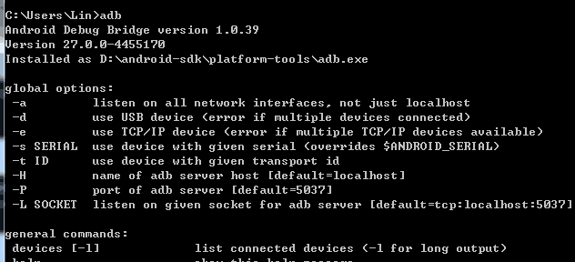
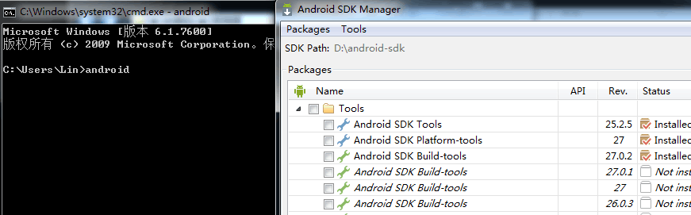
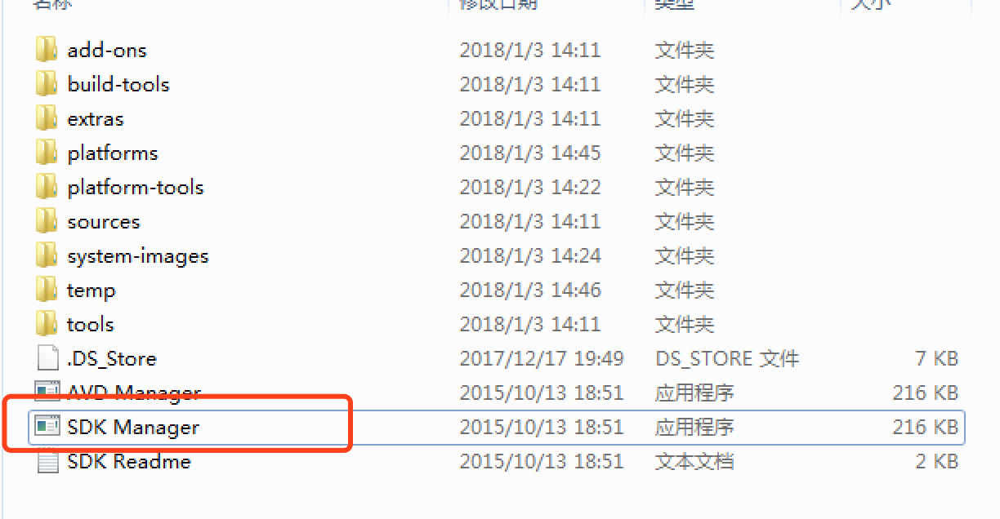

1.2.Android sdk的环境配置
1.2.1 Android SDK文件夹解压到指定目录(我的解压目录：D:\android-sdk)
1.2.2 SDK环境变量配置(Windowns7为例)
1.进入我的电脑 -> 属性 -> 高级系统设置 -> 环境变量
2.在系统变量下点击新建 -> 变量名: ANDROID_HOME -> 变量值: D:\android-sdk -> 点击确定按钮
3.在系统变量下找到系统的path变量，最后添加：;%ANDROID_HOME%\platform-tools;%ANDROID_HOME%\tools;(最前面是一个分号，如果path变量最后已有分号，可不用添加) -> 点击确定按钮
- 1.2.3 验证环境变量
1.win+r 或者 开始 -> 搜索框输入cmd
2.在界面输入adb -> 按回车

3.在界面输入android -> 按回车，会出现Android adk manager对话框

4.若出现以上图显示，证明安装成功
- 1.2.4 mac环境配置
1.进入命令行， vim ~/.bash_profile
2.# set android
ANDROID_HOME=电脑存放的路径/android-sdk-macosx
PATH=$PATH:$ANDROID_HOME/tools:$ANDROID_HOME/platform-tools
export ANDROID_HOME
export PATH
- 1.2.5 如何下载android版本
1.进入android-sdk目录，双击击SDK Manager.exe

因国外下载较慢，所以需要配置国内镜像
2.在弹出的Android SDk Manager页面，点击Tools ，下拉框点击Options...


镜像地址列表(也可以网上查找最新的)：
中国科学院开源协会镜像站地址:
IPV4/IPV6: mirrors.opencas.cn 端口：80
IPV4/IPV6: mirrors.opencas.org 端口：80
IPV4/IPV6: mirrors.opencas.ac.cn 端口：80
上海GDG镜像服务器地址:
sdk.gdgshanghai.com 端口：8000
北京化工大学镜像服务器地址:
IPv4: ubuntu.buct.edu.cn/ 端口：80
IPv4: ubuntu.buct.cn/ 端口：80
IPv6: ubuntu.buct6.edu.cn/ 端口：80
大连东软信息学院镜像服务器地址:
mirrors.neusoft.edu.cn 端口：80
3.下载需要的Android版本，只需要下载SDK Platform (例如我要下载7.1.1版本)

4.下载对应android版本的Android SDK Build-tools(自动化测试获取toast消息时需要)